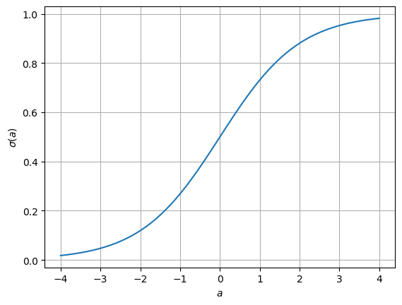
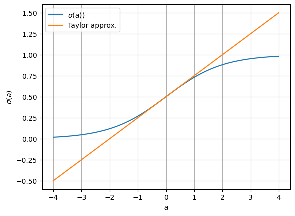
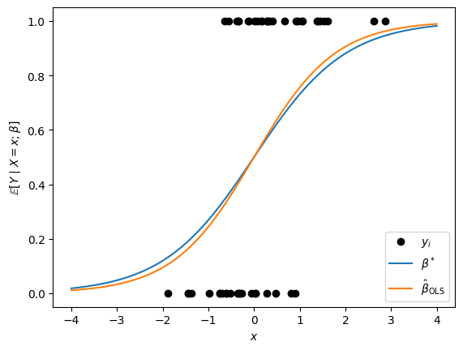
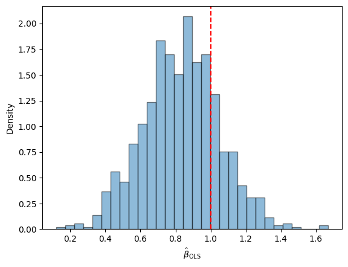
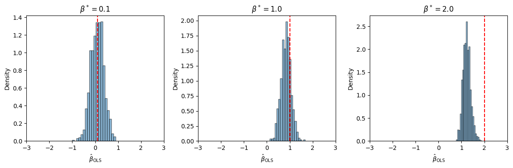
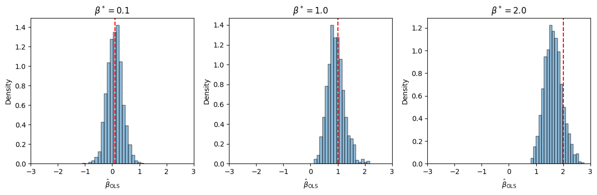
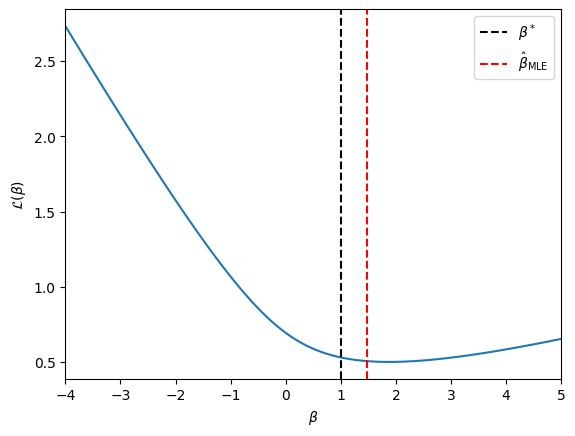

Logistic Regression#
We started with basic discrete distributions for single random variables, and then we modeled pairs of categorical variables with continency tables. Here, we build models for predicting categorical responses given several explanatory variables.
# Setup
import torch
import matplotlib.pyplot as plt
from torch.distributions import Normal, Bernoulli
Contingency Tables with Binary Responses#
A special case of contingency table analyses is when \(X \in \{1, \ldots, I\}\) corresponds to a categorical feature (e.g., to which of \(I\) groups a data point belongs) and \(Y \in \{0,1\}\) is a binary response.
The corresponding tables are \(I \times 2\). Normalizing each row yields a Bernoulli conditional distribution,
where, \(\pi_{1|i} = \Pr(Y=1 \mid X=i)\) or, equivalently, \(\pi_{1|i} = \E[Y \mid X=i]\).
The conditional distributions are the primary objects of interest when our goal is to make predictions. They can also be used to test for independence by testing the homogeneity of conditionals.
One, Two, Many…#
What if we have more than one feature, \(X_1, \ldots, X_p\)? We could construct a multi-dimensional contingency table to estimate the joint distribution over \((X_1,\ldots, X_p,Y)\), but we quickly encounter the curse of dimensionality: if each feature takes on \(K\) values, there are \(\cO(K^D)\) cells in the table.
Moreover, what if the features take on continuous values? Then the notion of a finite table no longer makes sense.
Instead, let’s try to model the conditional distribution directly. Let \(Y \in \{0,1\}\) denote a binary response and let \(\mbX \in \reals^p\) denote associated covariates. For example, \(Y\) could denote whether or not your favorite football team wins their match, and \(X\) could represent features of the match like whether its a home or away game, who their opponent is, etc. We will model the conditional distribution of \(Y\) given the covariates,
where
This is a standard regression setup. The modeling problem boils down to choosing the functional form of \(\pi(\mbx)\).
Linear Regression#
If you took STATS 305A, you know pretty much everything there is to know about linear regression with continuous response variables, \(Y \in \reals\). Why don’t we just apply that same model to binary responses? Specifically, let,
The obvious problem is that this linear model produces probabilities or expectations \(\pi(\mbx) \in \reals\) instead of just over the valid range \([0,1]\), which is clearly misspecified!
Logistic Regression#
The idea is simple: keep the linear part of linear regression, but apply a mean (aka inverse link) function, \(f: \reals \mapsto [0,1]\), to ensure \(\pi(\mbx)\) returns valid probabilities,
There are infinitely many squashing nonlinearities that we could choose for \(f\), but a particularly attractive choice is the logistic (aka sigmoid) function,
Show code cell source
a = torch.linspace(-4, 4, 100)
plt.plot(a, torch.sigmoid(a))
plt.grid(True)
plt.xlabel(r"$a$")
plt.ylabel(r"$\sigma(a)$")
plt.show()

One nice feature of the logistic function is that it is monotonically increasing, so increasing in \(\mbbeta^\top \mbx\) yield larger probability estimates. That also means that we can invert the sigmoid function. In doing so, we find that the linear component of the model \(\mbbeta^\top \mbx\) correspond to the log odds of the binary response since the inverse of the sigmoid function is the logit function,
Finally, we’ll see that the logistic function leads to some simpler mathematical calculations when it comes to parameter estimation and inference.
Another common mean function is the Gaussian CDF, and we’ll consider that in a later chapter.
Hacky Parameter Estimation with OLS#
How do we estimate the parameters, \(\hat{\mbbeta}\)? If the model were linear, then our first inclination might be to use ordinary least squares (OLS). Of course, the sigmoidal function above renders the model nonlinear, but what if we just used a Taylor approximation around the origin,
Show code cell source
plt.plot(a, torch.sigmoid(a), label=r"$\sigma(a)$)")
plt.plot(a, 0.5 + 0.25 * a, label="Taylor approx.")
plt.grid(True)
plt.xlabel(r"$a$")
plt.ylabel(r"$\sigma(a)$")
plt.legend()
plt.show()

Then under this model,
or equivalently,
where \(Z = 4 (Y - \tfrac{1}{2}) \in \{-2, +2\}\) is an adjusted response variable.
Given a set of \(n\) observations of features and (adjusted) responses, \(\{\mbx_i, z_i\}_{i=1}^n\), the OLS estimate is,
Demo#
Let’s try it out for a simulated dataset with scalar covariates \(X_i \sim \mathrm{N}(0,1)\). We’ll simulate responses \(Y_i \mid X_i = x_i \sim \mathrm{Bern}(\sigma(\beta^* x_i))\) for a few values of \(\beta^*\).
def sample_and_fit_ols(seed, n, beta_true):
torch.manual_seed(seed)
X = Normal(0, 1.0).sample((n,)) # covariates
Y = Bernoulli(logits=X * beta_true).sample() # binary outcomes
# Fit OLS
Z = 4 * (Y - 0.5)
beta_ols = torch.sum(X * Z) / torch.sum(X ** 2)
return X, Y, beta_ols
# Generate, fit, and plot a synthetic dataset
seed = 305+ord("b")
n = 50
beta_true = 1.0
X, Y, beta_ols = sample_and_fit_ols(seed, n, beta_true)
xs = torch.linspace(-4, 4, 100)
plt.plot(X, Y, "ko", label=r"$y_i$")
plt.plot(xs, torch.sigmoid(xs * beta_true), label=r"$\beta^*$")
plt.plot(xs, torch.sigmoid(xs * beta_ols), label=r"$\hat{\beta}_{\mathsf{OLS}}$")
plt.xlabel(r"$x$")
plt.ylabel(r"$\mathbb{E}[Y \mid X=x; \beta]$")
plt.legend(loc="lower right")
<matplotlib.legend.Legend at 0x3379b3dc0>

Not too shabby! Let’s try it with a bunch of simulated datasets.
beta_olss = [sample_and_fit_ols(seed, n, beta_true)[-1] for seed in range(1000)]
plt.hist(beta_olss, bins=30, density=True, alpha=0.5, edgecolor="k")
plt.axvline(beta_true, color="r", linestyle="--", label=r"$\beta^*$")
plt.xlabel(r"$\hat{\beta}_{\mathsf{OLS}}$")
plt.ylabel("Density")
Text(0, 0.5, 'Density')

It looks a bit biased, but it’s not terrible.
What if we try for other values of \(\beta^*\)?
n = 50
fig, axs = plt.subplots(1, 3, figsize=(12, 4))
for ax, beta_true in zip(axs, [0.1, 1.0, 2.0]):
beta_olss = [sample_and_fit_ols(seed, n, beta_true)[-1] for seed in range(1000)]
ax.hist(beta_olss, bins=20, density=True, alpha=0.5, edgecolor="k")
ax.axvline(beta_true, color="r", linestyle="--", label=r"$\beta^*$")
ax.set_xlabel(r"$\hat{\beta}_{\mathsf{OLS}}$")
ax.set_xlim(-3, 3)
ax.set_ylabel("Density")
ax.set_title(rf"$\beta^* = {beta_true}$")
plt.tight_layout()

Uh oh… 😬
Question
Why do you think the OLS estimator becomes more biased as \(\beta^*\) grows?
Maximum Likelihood Estimation#
Let’s try a more principled approach: maximum likelihood estimation. For standard linear regression with independent Gaussian responses and homoskedastic noise, \(\hat{\mbbeta}_{\mathsf{MLE}} = \hat{\mbbeta}_{\mathsf{OLS}}\). Unfortunately, for logistic regression, there isn’t a closed form for \(\hat{\mbbeta}_{\mathsf{MLE}}\). However, we can use standard optimization techniques to compute it.
There are plenty of standard implementations of maximum likelihood estimation for logistic regression models. Let’s see how scikit-learn’s implementation fares on the simulated datasets above.
Demo#
from sklearn.linear_model import LogisticRegression
def sample_and_fit_mle(seed, n, beta_true):
torch.manual_seed(seed)
X = Normal(0, 1.0).sample((n,)) # covariates
Y = Bernoulli(logits=X * beta_true).sample() # binary outcomes
# Fit MLE
beta_mle = LogisticRegression().fit(X.reshape(-1, 1), Y).coef_[0, 0]
return X, Y, beta_mle
n = 50
fig, axs = plt.subplots(1, 3, figsize=(12, 4))
for ax, beta_true in zip(axs, [0.1, 1.0, 2.0]):
beta_mles = [sample_and_fit_mle(seed, n, beta_true)[-1] for seed in range(1000)]
ax.hist(beta_mles, bins=20, density=True, alpha=0.5, edgecolor="k")
ax.axvline(beta_true, color="r", linestyle="--", label=r"$\beta^*$")
ax.set_xlabel(r"$\hat{\beta}_{\mathsf{OLS}}$")
ax.set_xlim(-3, 3)
ax.set_ylabel("Density")
ax.set_title(rf"$\beta^* = {beta_true}$")
plt.tight_layout()

Much better!
Exercise
Try fitting the MLE for different numbers of data points, \(n\). Is it asymptotically biased?
Deriving the MLE#
Maximizing the likelihood is equivalent to minimizing the (average) negative log likelihood for a collection of covariates and responses, \(\{\mbx_i, y_i\}_{i=1}^n\),
Now let’s plug in the definition of \(\pi(\mbx)\). The first term is just the log odds, which we already showed is equal to \(\mbbeta^\top \mbx\), the linear component of the model. The second term simplifies too.
Computing the Gradient#
We want to maximize the log likelihood, which is of course equivalent to minimizing the negative log likelihood, so let’s take the gradient,
Thus, the gradient is a weighted sum of the covariates, and the weights are the residuals \(y_i - \sigma(\mbx_i^\top \mbbeta)\), i.e., the difference between the observed and expected response.
This is pretty intuitive! Remember that the gradient points in the direction of steepest descent. This tells us that to increase the log likelihood the most (equivalently, decrease \(\cL\) the most), we should move the coefficient in the direction of covariates where the residual is positive (we are underestimating the mean), and we should move opposite the direction of covariates where the residual is negative (where we are overestimating the mean).
Now that we have a closed-form expression for the gradient, we can implement a simple gradient descent algorithm to minimize the negative log likelihood,
where \(\alpha_t \in \reals_+\) is the step-size at iteration \(i\) of the algorithm. If the step sizes are chosen appropriately and the objective is well behaved, the alorithm converges to at least a local optimum of the log likelihood.
Convexity of the Log Likelhood#
If the objective is convex, then all local optima are also global optima, and we can give stronger guarantees on gradient descent. To check the convexity of the log likelihood, we need to compute its Hessian,
where \(\sigma'(a)\) is the derivative of the logistic function. That is,
Plugging this in,
where the weights are, \(w_i = \sigma(\mbbeta^\top \mbx_i)(1 - \sigma(\mbbeta^\top \mbx_i)) = \Var[Y \mid \mbX = \mbx_i]\). In other words, the Hessian is a weighted sum of outer products of covariates where the weights are equal to the conditional variance. Since variances are non-negative, so are the weights, which implies that the Hessian is positive semi-definite, which implies that the negative log likelihood is convex.
Example#
As an example, let’s plot the negative log likelihood for a scalar covariate example, as above.
seed = 305+ord("b")
n = 50
beta_true = 1.0
X, Y, beta_mle = sample_and_fit_mle(seed, n, beta_true)
betas = torch.linspace(-4, 5, 100)
nlls = -Bernoulli(logits=X[:, None] * betas[None, :]).log_prob(Y[:, None]).mean(axis=0)
plt.plot(betas, nlls)
plt.axvline(beta_true, color="k", linestyle="--", label=r"$\beta^*$")
plt.axvline(beta_mle, color="r", linestyle="--", label=r"$\hat{\beta}_{\mathsf{MLE}}$")
plt.xlabel(r"$\beta$")
plt.xlim(betas[0], betas[-1])
plt.ylabel(r"$\mathcal{L}(\beta)$")
plt.legend(loc="upper right")
plt.show()

Regularization#
Pathologies in the Separable Regime#
Suppose the two classes are linearly separable,
Now let \(\mbbeta = c \mbu\) for any \(c \in \reals_+\). We have
In this limit, the model is saturated: \(\Pr(y_i \mid \mbx_i) = 1\) for all \(i=1,\ldots,n\); the negative log likelihood goes to \(\lim_{c \to \infty} \cL(c \mbu) = 0\); and the MLE does not exist since \(\mbbeta^\star\) diverges.
If we run gradient descent in this setting, the magnitude of the estimate \(\hat{\mbbeta}\) will grow without bound, but the objective should converge to zero. Nevertheless, the diverging MLE is problematic for our convergence rate analysis, since it depends on the norm \(\|\mbbeta^\star - \mbbeta_0\|_2^2\).
\(L_2\)-Regularization#
These pathologies can be averted with a little regularization,
The regularizer penalizes larger values of the weights, \(\mbbeta\), and the hyperparameter \(\gamma \in \reals_+\) sets the strength of the penalty. Even in the linearly separable regime, the maximizer is finite.
Now, the gradient and Hessian are,
Choosing the Hyperparameter#
It remains to select a value of \(\gamma\). There are many ways to do so. One approach is to not choose a single value and instead try to compute the regularization path; i.e., the solution \(\hat{\mbbeta}(\gamma)\) for a range of \(\gamma \in [0, \infty)\). Another is to hold out a fraction of data and use cross-validation to select the hyperparameter setting that yields the best performance on the held-out data.
Bayesian Perspective#
From a Bayesian perspective, we can think of the regularizer as a prior log probability. In the case above, the regularizer corresponds to a spherical Gaussian prior,
where precision (inverse covariance) \(\gamma n \mbI\). Minimizing the objective above corresponds to doing maximum a posteriori (MAP) estimation in the Bayesian model. If you are going to take a Bayesian stance, it’s a bit strange to summarize the entire posterior by its mode, though. We are interested in the posterior distribution as a whole. At the very least, we’d like to know the variance around the mode. We’ll talk more about Bayesian methods in the coming weeks.
Newton’s Method#
Gradient descent leverages the gradient at \(\mbbeta\) to determine the update. Newton’s method uses the Hessian to inform the update as well, and in doing so it can achieve considerably faster convergence.
The second order Taylor approximation of \(\cL\) around \(\mbbeta\) is
The stationary point of \(\widetilde{\cL}(\mbbeta')\) is at
assuming the Hessian is invertible. When \(\nabla^2 \cL(\mbbeta) \succ 0\) — i.e., when the Hessian is positive definite — the inverse Hessian exists and the stationary point is a minimizer.
The vanilla Newton’s method applies this update repeatedly until convergence, forming a quadratic approximation and then minimizing it. Damped Newton’s method adds a step size \(\alpha_t < 1\) to improve stability,
and the step size can be chosen by backtracking line search, for example.
Question
Compare the Newton update to that of gradient descent. How do they differ?
Iteratively Reweighted Least Squares#
Newton’s method solves for the minimum of a quadratic approximation to the loss function at each iteration. What else involves minimizing a quadratic loss function? Least squares. It turns out that Newton’s method can be viewed as iteratively solving a weighted least squares problem. To see this, Let’s first write the gradient and Hessian in matrix form,
where
\(\mbX \in \reals^{n \times p}\) is the design matrix with rows \(\mbx_i^\top\)
\(\mby \in \{0,1\}^n\) is the vector of binary responses
\(\hat{\mby}_t = \sigma(\mbX \mbbeta_t) \in [0,1]^n\) is the vector of predicted response means
\(\mbW_t = \diag([w_{t,1}, \ldots, w_{t,n}])\) with \(w_{t,i} = \sigma(\mbx_i^\top \mbbeta_t) (1- \sigma(\mbx_i^\top \mbbeta_t))\) is the diagonal weight matrix, where the weights are given by the conditional variances.
Then the (undamped) Newton update is,
where
We recognize the update the update above as the solution to a weighted least squares problem with weights \(w_{t,i}\) and adjusted (or working) responses \(z_{t,i}\).
How can we interpret the working responses? We can view them as the real responses mapped through a Taylor approximation of the link (inverse mean) function,
Asymptotic Covariance of MLE#
What other insight can we glean from the Hessian? Recall our discussion of the asymptotic normality of the MLE from Lecture 1. For iid observations \(Y_i \iid{\sim} p(\cdot; \mbtheta)\) for \(i=1,\ldots,n\), the asymptotic covariance is \(\cI(\mbtheta)^{-1} / n\), where
is the Fisher information matrix.
For logistic regression, we have \(n\) independent but not identically distributed observations. In this case, the asymptotic covariance follows the same form. It is given by the inverse of the Fisher information matrix; i.e., the inverse of the negative expected Hessian of the log likelihood,
(Note that this includes the iid formula as a special case.)
Substituting the form of the Hessian from above,
where \(w_i = \sigma(\mbbeta^\top \mbx_i) (1 - \sigma(\mbbeta^\top \mbx_i))\). Finally, we evaluate the Fisher information the MLE to obtain the asymptotic covariance estimate,
Like before, we can use the asymptotic covariance estimate to derive Wald confidence intervals for the parameters and perform hypothesis tests.
Caution
Remember, Wald confidence intervals are only as good as the asymptotic normality assumption. When the likelihod is not well approximated by a quadratic, the covariance estimate will be poor, and the confidence intervals will be invalid. When might the Gaussian approximation not hold?
Convergence Rates#
Gradient descent is pretty simple to implement. Is it worth our time and effort to implement Newton’s method for logistic regression? Often the answer is a resounding yes! As we’ll see, Newton’s method can achieve second order converge rates, whereas gradient descent is only linear.
Converge Rate of Gradient Descent#
To determine when and at what rate gradient descent converges, we need to know more about the eigenvalues of the Hessian.
If we can bound the maximum eigenvalue of the Hessian by \(L\), then we can obtain a quadratic upper bound on the negative log likelihood,
That means the negative log likelihood is an \(L\)-smooth function.
Example: Bounded Covariates
If the covariates have bounded norm, \(\|\mbx_i\|_2 \leq B\), then we can bound the maximum eigenvalue of the Hessian by,
since the weights are the conditional variances of Bernoulli random variables, which are at most \(\tfrac{1}{4}\), and since \(\mbu^\top \mbx_i \leq B\) for all unit vectors \(\mbu \in \bbS_{p-1}\) (the unit sphere embedded in \(\reals^p\)). This isn’t meant to be a tight upper bound.
If we run gradient descent with a constant step size of \(\alpha = 1/L\), then the algorithm converges at a rate of \(1/t\), which means that after \(t\) iterations
where \(\mbbeta_0\) is the initial setting of the parameters and \(\mbbeta^\star\) is the global optimum.
Put differently, if we want a gap of at most epsilon, we need to run \(t \sim \cO(1/\epsilon)\) iterations of gradient descent. Put differently, if we want to reduce \(\epsilon\) by a factor of 100, we need to run around 100 times as many iterations. This is called a sub-linear convergence rate.
Converge Rate of Gradient Descent with Regularization#
With regularization, we can also lower bound the objective by a quadratic function,
for \(\mu > 0\), which means the objective is \(\mu\)-strongly convex.
For twice differentiable objectives, the minimum eigenvalue of Hessian provides such a lower bound, \(\mu = \lambda_{\mathsf{min}}\). In particular, we know that minimum eigenvalue of \(\nabla^2 \cL(\mbbeta)\) is at least \(\gamma\). (This bound is achieved when the data are linearly separable, the model is saturated, and the conditional variances are all zero.)
For a \(L\)-smooth and \(\mu\)-strongly convex function with stepsize \(\alpha = 1/L\), gradient descent has the following convergence guarantee,
Applying this bound recursively yields that,
If we want to find the number of iterations \(t\) to bound the gap by at most \(\epsilon\), we need to solve for \(t\) in
This inequality is equivalent to taking the log of both sides
We can further upper bound the LHS by using the inequality \(\log ( 1 - x) \leq -x\) to get
So, we need to run \(t \geq \frac{L}{\mu} \log \frac{\cL(\mbbeta_0) - \cL(\mbbeta^\star)}{\epsilon} \sim \log \frac{1}{\epsilon}\) iterations of gradient descent. If we want to reduce \(\epsilon\) by a factor of 100, we only need to run around \(\log 100\) times as many iterations. This is called linear convergence.
Converge Rate of Newton’s Method#
Under certain conditions — if the objective is strongly convex, the Hessian is Lipschitz continuous, and we start near enough to the global optimum — Newton’s method achieves second order convergence, meaning
for some positive constant \(c\), provided we start with \(\mbbeta_0\) close enough to \(\mbbeta^\star\). Applying this bound recursively yields that,
Put differently, if we start with \(\|\mbbeta_0 - \mbbeta^\star\| < c^{-1}\), then we need \(t \sim \cO(\log \log \frac{1}{\epsilon})\) iterations to obtain an error of \(\epsilon\). Since the double log grows incredibly slowly, this statement says that we effectively need a constant number of iterations for Newton’s method to converge in this regime.
For more information on convergence rates of gradient descent and Newton’s method, see Boyd and Vandenberghe [BV04], ch. 9.
Conclusion#
One, two, many… with logistic regression, we can begin modeling relationships between binary response variables and (possibly arbitrary-valued) covariates. Next, we’ll see how to expand from logistic regression to generalized linear models for exponential family responses.